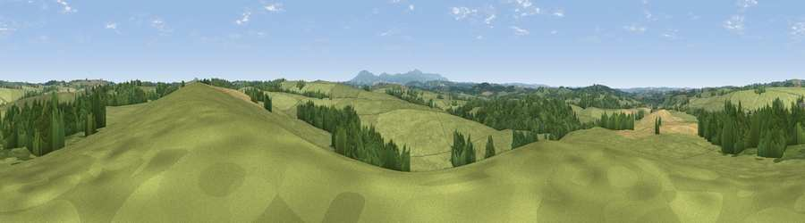

Viewpoint near Monkokehampton
#28171 in England · top 61% of its area beats it · near MonkokehamptonWhere it is
The exact computed spot (SS 59625 04875). Click the marker for map links.
The view, rendered

A 360° render of this exact spot computed from the terrain model, tree cover and land cover — summer colours, afternoon light, calibrated against photographs of famous viewpoints. Real trees, hedges and buildings will differ in detail.
The panorama
Grey silhouette: terrain skyline in each direction (720 bearings, Earth curvature and refraction included). Dashed green: skyline with trees (+15 m) and buildings (+8 m) as obstacles. Blue strip: how far the ground is visible on each bearing.
Where the view opens
Wedge length = distance to the farthest visible ground on that bearing (vegetation-aware). Rings at 10, 25 and 50 km.
What fills the view
73% grassland · 21% woodland · 5% cropland
Angular shares of the visible panorama (visual magnitude), not map area. Landscape diversity 0.31 (0–1 Shannon).
Key numbers
More beautiful places nearby
The staircase of upgrades: each row has a higher view potential than everything closer. Driving times are estimates from straight-line distance, calibrated against real road routing — check an actual route before setting out.
| Place | Direction | Drive | Score |
|---|---|---|---|
| Viewpoint near Exbourne | SE · 1 km | ~4 min | 42.5 |
| Viewpoint near Broadwoodkelly | NNE · 3 km | ~8 min | 50.7 |
| Viewpoint near Iddesleigh | N · 4 km | ~9 min | 61.0 |
| Viewpoint near Bondleigh | ENE · 6 km | ~12 min | 64.0 |
| Viewpoint near Petrockstowe | WNW · 11 km | ~21 min | 65.5 |
| Viewpoint near Sticklepath | SSE · 12 km | ~23 min | 73.5 |
| Viewpoint near South Zeal | SSE · 14 km | ~25 min | 75.0 |
| Yes Tor | S · 15 km | ~27 min | 78.5 |
50.82635, -3.99447 · source: screening · position refined by local search. Computed location — check access rights before visiting.